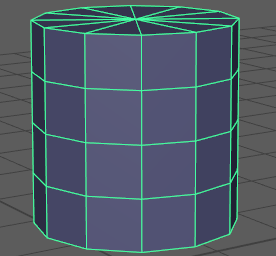
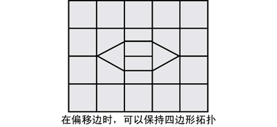

通过“偏移循环边工具”(Offset Edge Loop Tool)，可以在选择的边的任一侧插入两条平行边。当需要将局部细节添加到一条边或多条边的多边形网格中时，使用“偏移循环边”(Offset Edge Loop)将非常有用。

编辑多边形网格时，存在将网格曲面从常见的理想四边形拓扑（四边形）拆分为三角形或某种类型的多边形拓扑的风险。
可以使用“偏移循环边工具”(Offset Edge Loop Tool)来保持四边形拓扑的完整性，以便在所选边的任一侧插入边。当一条边在由四边形构成的网格上偏移时，“偏移循环边工具”(Offset Edge Loop Tool)将在所选边的任一侧创建两条新边并细分面，以确保保持四边形拓扑。

更改“偏移循环边工具”(Offset Edge Loop Tool)，使其作为操作工作
- 从“建模”(Modeling)菜单集中，选择“网格工具 > 偏移循环边”(Mesh Tools > Offset Edge Loop) >
 。
。
- 从偏移循环边选项(Offset Edge Loop Options)窗口中，依次选择“编辑”(Edit)菜单和“作为操作”(As Action)，然后单击“关闭”(Close)。
这样下次选择该功能时，将可以使用其他选项。
当工具处于活动状态时，可以使用标记菜单在偏移循环边选项(Offset Edge Loop Options)中启用或禁用“自动完成”(Auto Complete)和“删除边”(Delete Edge)。这样，您可以继续工作以完成任务，而无需重新打开工具选项窗口。
在“偏移循环边工具”(Offset Edge Loop Tool)处于活动状态时更改工具选项
- 同时按住 Ctrl 和 Shift 键并在场景视图中远离曲面的任意位置单击鼠标右键。
此时“偏移循环边工具”(Offset Edge Loop Tool)选项（“自动完成”(Auto Complete)和“删除边”(Delete Edge)）将显示在标记菜单中。
- 根据所需的工作流程，您可以从标记菜单中选择“自动完成”(Auto Complete)和/或“删除边”(Delete Edge)来启用或禁用这些选项。
可以继续使用“偏移循环边工具”(Offset Edge Loop Tool)，且可以使用选定的选项。